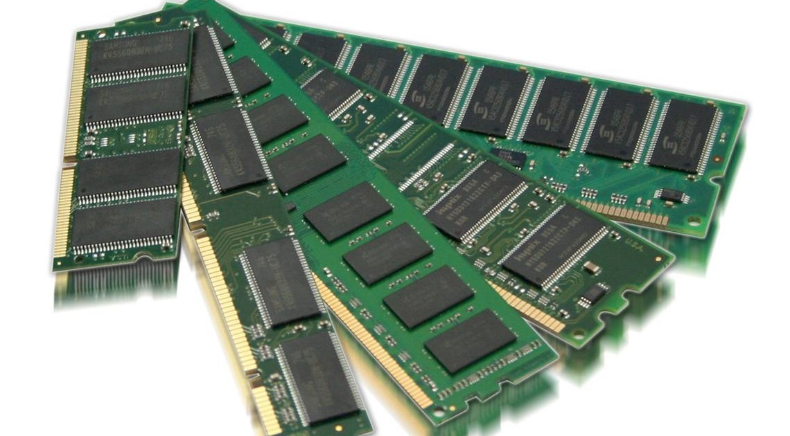

Random access memory was first introduced in 1947 by Freddie Williams and Thomas Kilburn. It stored data as electrically charged spots in something called a ‘Williams tube’. The Dynamic Random Access Memory (RAM) that is widely used today was first developed in 1968 by Robert Dennard. Initially it could only store 1kbit (one-thousand bits) of data at a time.
RAM has come a long way since then and now the most efficient form of RAM is Samsung's 1 TB DDR5 memory module. DDR is double data rate and it works by transferring data during both the beginning and ending cycle of a clock signal allowing data to travel twice as fast.

The most simple way for me to describe the function of RAM is to relate it to a well known biological function. In the case of random access memory, it closely resembles ‘working memory’ (similar to short term memory). Memory is stored temporarily to ensure certain processes work faster and more efficiently. RAM Is responsible for allowing a video to play in the back ground while you have multiple applications running. The more storage capacity your ram has the more parallel processes you can run without your computer slowing down.